Constant Head Permeability test
Objective:
To determine coefficient of permeability of given soil sample by constant head permeability test.
Apparatus used:
Permeameter, Filter paper, Porous stones, Water tank, Timer, Beakers, Graduated measuring cylinder, Connecting water pipes.

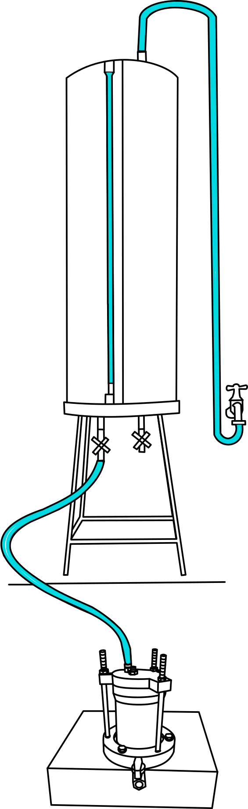
Description
Permeability is the property of soil which allows the water to percolate through its continuously connected voids.
Coefficient of permeability is equal to the rate of flow of water through unit cross sectional area under unit hydraulic gradient.
STEP
1
Measure the inner diameter and height of the mould, then calculate the volume of the mould.
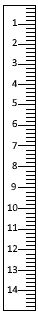
STEP
2
Place the sealing gasket and the porous stone inside the groove of the baseplate.
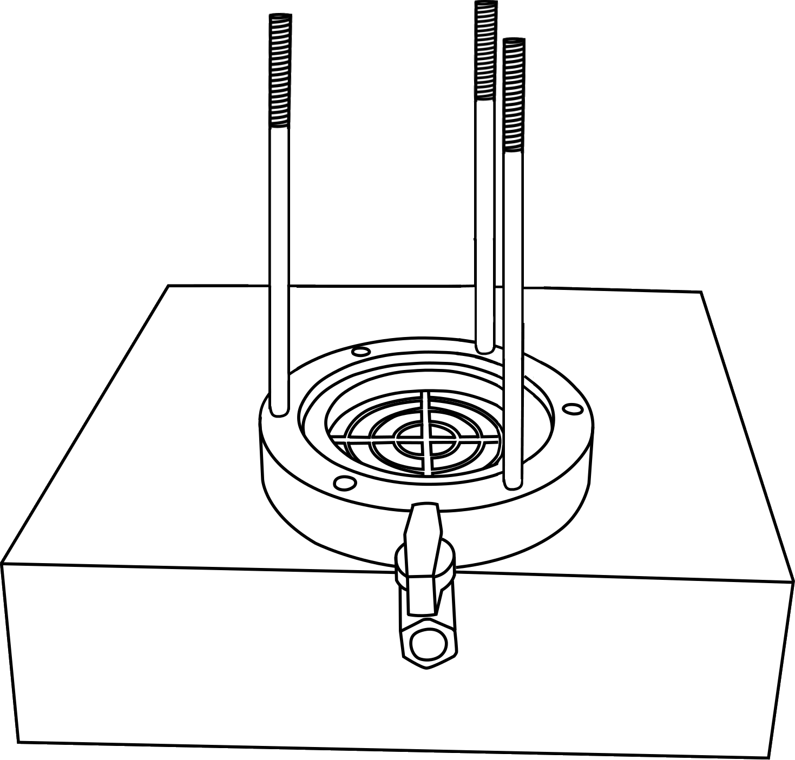
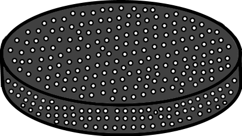
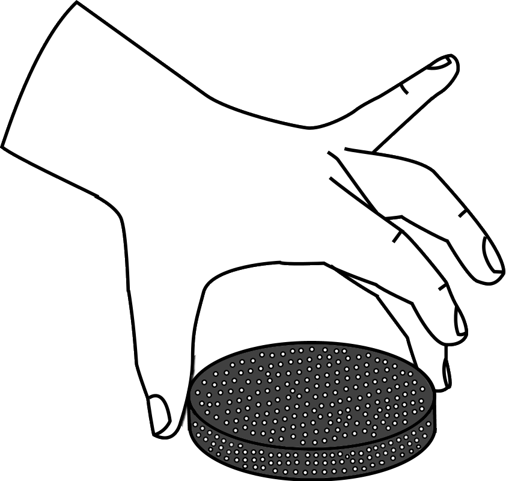
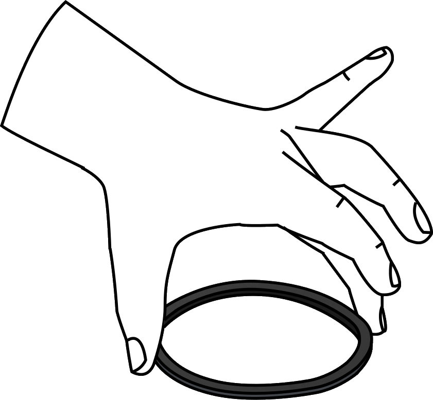
STEP
3
Fix the mould on the base plate. Using the nut and bolt mechanism completely fasten the bolts to make the permeameter completely leak proof and then place a filter paper inside the mould.
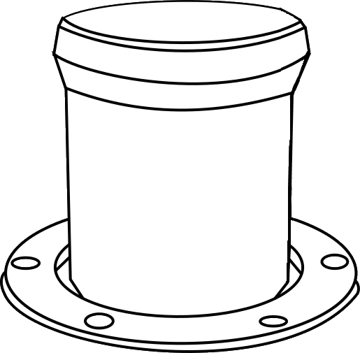
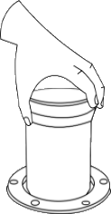

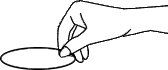
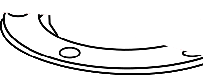
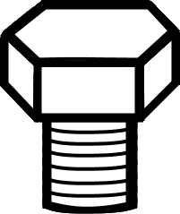
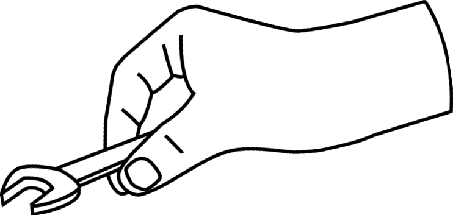
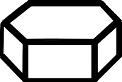
STEP
4
Pour the soil sample into the mould in 3 layers with 5 blows to each layer.


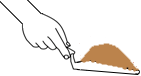
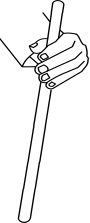
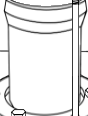
STEP
5
Place a filter paper on top of the soil and then place a porous stone on top of it.
STEP
6
Insert the sealing gasket into the top plate and place it above the mould. Then using the nut and screw mechanism completely fasten the bolts to make the permeameter completely leak proof.
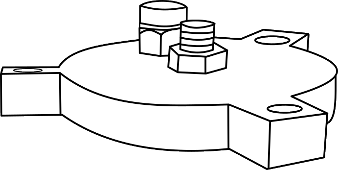
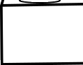
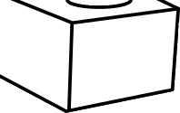
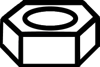
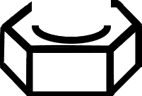
STEP
7
Now connect the water pipe from the overhead tank to the bottom outlet pipe of the permeameter and also open the air release valve.
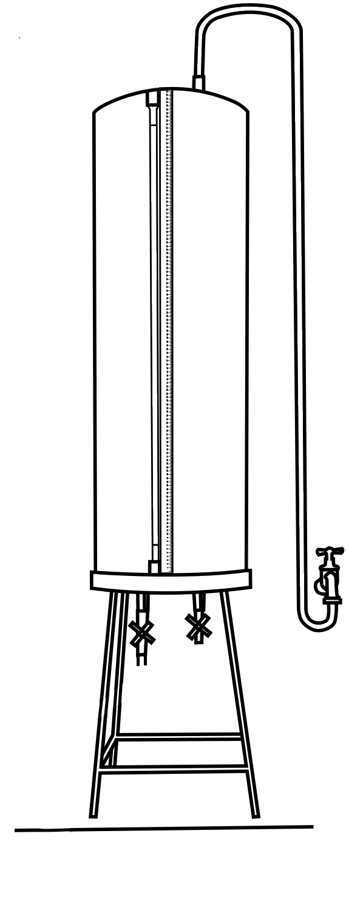
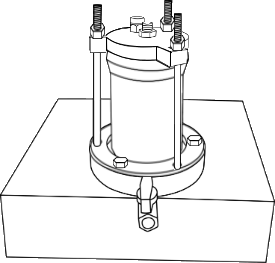
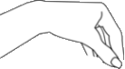
STEP
8
Allow the water to fill inside the permeameter and all the air voids also will get escaped through the air release valve. Once water starts to flow through the air release valve, stop the water supply and close the air release valve.
STEP
9
Now connect the water pipe to the inlet pipe of the permeameter and allow the flow of water maintaining a constant head of water in the overhead tank.
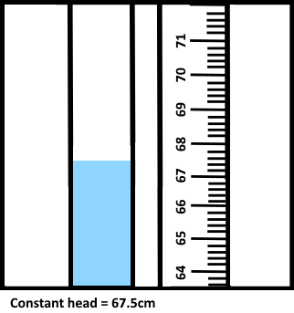
STEP
10
Collect the water with a measuring jar for a fixed time interval and note down the value. Repeat the same process for different time intervals.
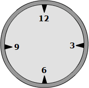
| Trial No. |
Time, t (sec) |
Volume of water, Q (cm3) |
Observations:
| Trial No. |
Time, t (sec) |
Volume of water (cm3) |
Inference:
As the value of coefficient of permeability lies between 10-3 to 10-4 the soil can be classified as silty sand.
Variables used in calculation

© 2020 -
SOLVE - The Virtual Lab @ NITK Surathkal, Department of Water Resources & Ocean Engineering